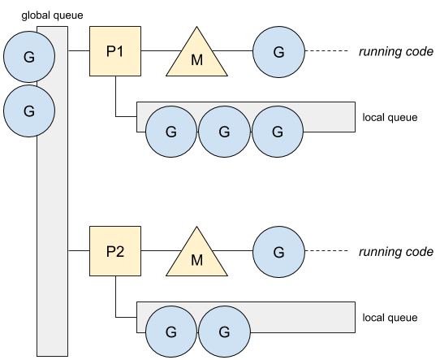
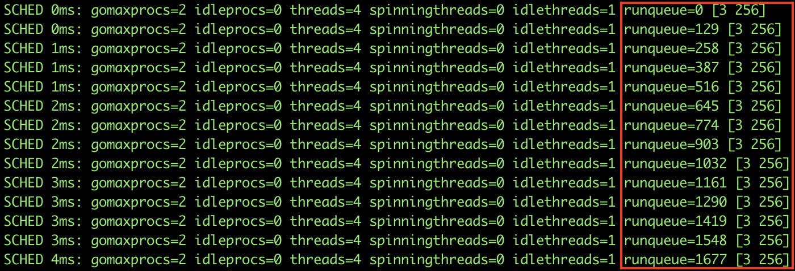
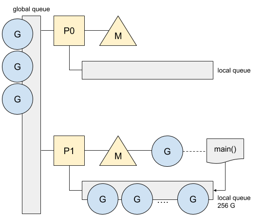
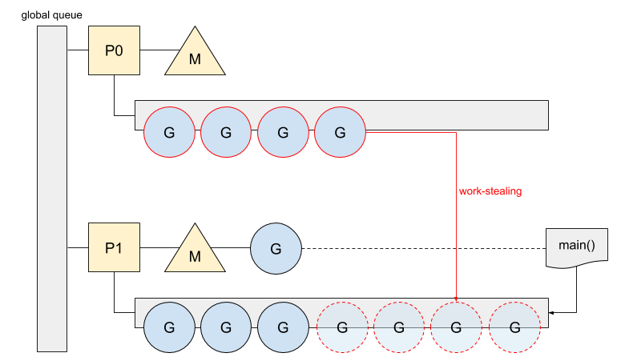
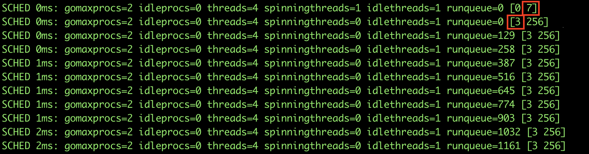
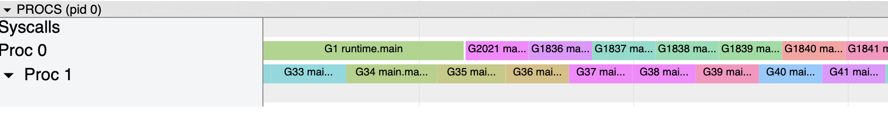
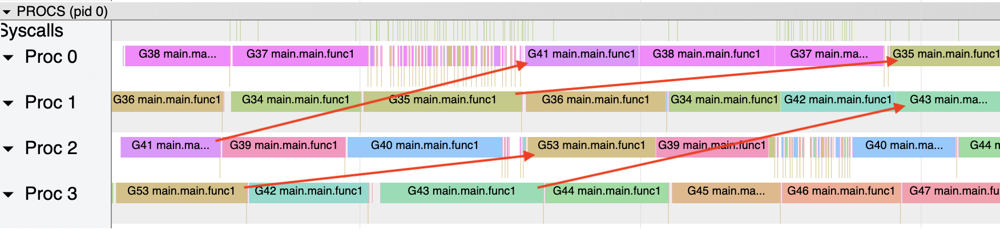
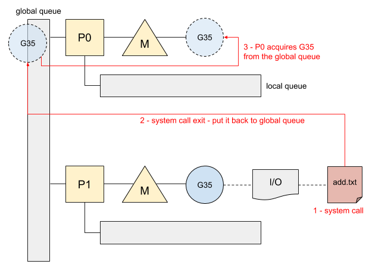

Go: 调度器的任务窃取 (Work-Stealing)
ℹ️ 本文基于 Go 1.13
在 Go 中创建 Goroutine 既方便又快捷，然而 Go 在同一时间内最多在一个核上运行一个 Goroutine，因此需要一种方法来存放其他的 Goroutine，从而确保处理器（processor）负载均衡。
Goroutine 队列
Go 使用两级队列来管理等待中的 Goroutine，分别为本地队列和全局队列。每一个处理器都拥有本地队列，而全局队列是唯一的，且能被所有的处理器访问到：

每个本地队列都有最大容量，为 256。在容量满了之后，任意新到来的 Goroutine 都会被放置到全局队列。下面的例子是，生产了上千个 Goroutine 的程序：
func main() {
var wg sync.WaitGroup
for i := 0;i < 2000 ;i++ {
wg.Add(1)
Go func() {
a := 0
for i := 0; i < 1e6; i++ {
a += 1
}
wg.Done()
}()
}
wg.Wait()
}
下面是拥有两个处理器的调度器追踪数据（traces）：

追踪数据通过 runqueue 展示了全局队列中 Goroutine 的数量，以及方括号中 [3 256] 的本地队列 Goroutine 数量（分别为 P0 和 P1）。当本地队列满了，积压了 256 个等待中的 Goroutine 后，下一个 Goroutine 会被压栈到全局队列中，正如我们从 runqueue 看到的数量增长一样。
Goroutine 仅在本地队列满载之后才会加入到全局队列；它也会在 Go 往调度器中批量注入时被加到全局队列，例如，网络轮询器（network poller） 或者在垃圾回收期间等待的 Goroutine。
下面是上一个例子的图示：

不过，我们还想知道，为什么本地队列 P0 在上一个列子中不为空。因为 Go 使用了其他策略确保每个处理器都有任务处理。
任务窃取
如果处理器没有任务可处理，它会按以下规则来执行，直到满足某一条规则：
- 从本地队列获取任务
- 从全局队列获取任务
- 从网络轮询器获取任务
- 从其它的处理器的本地队列窃取任务
在我们前面的例子中，主函数在 P1 上运行并创建 Goroutine。当第一批 gourinte 已经进入了 P1 的本地队列时，P0 正在寻找任务。然而，它的本地队列，全局队列，以及网络轮询器都是空的。最后的解决方法是从 P1 中窃取任务。

下面是调度器在发生任务窃取前后的追踪数据：

追踪数据展示了，处理器是如何从其它处理器中窃取任务的。它从（其他处理器的）本地队列中取走一半的 Goroutine；在七个 Goroutine 中，偷走了四个 —— 其中一个立马在 P0 执行，剩下的放到本地队列。现在处理器间工作处于负载良好的状态。这能通过执行 tracing 来确认：

Goroutine 被合理地分发，然后因为没有 I/O，Goroutine 被链式执行而不需要切换。我们现在看一下，当出现例如涉及到文件操作等 I/O 时，会发生什么。
I/O 与全局队列
一起看下涉及到文件操作的例子：
func main() {
var wg sync.WaitGroup
for i := 0;i < 20 ;i++ {
wg.Add(1)
Go func() {
a := 0
for i := 0; i < 1e6; i++ {
a += 1
if i == 1e6/2 {
bytes, _ := ioutil.ReadFile(`add.txt`)
inc, _ := strconv.Atoi(string(bytes))
a += inc
}
}
wg.Done()
}()
}
wg.Wait()
}
变量 a 随着时间以文件的字节数增加，下面是新的追踪数据：

在这个例子中，我们能看到每一个 Goroutine 不只被一个处理器处理。在系统调用的情况下，当调用完成后，Go 使用网络轮询器从全局队列中把 gouroutine 取回来。这里是 Goroutine #35 的一个示意图：

当一个处理器能从全局队列中获取任务，第一个可用的处理器（ P） 会执行这个 Goroutine。这个行为解释了，为什么一个 Goroutine 能在不同的处理器中运行，也展示了 Go 是如何让空闲的处理器资源运行 Goroutine，从而进行系统调用的优化。
via: https://medium.com/a-journey-with-go/go-work-stealing-in-go-scheduler-d439231be64d
译者: SarahC